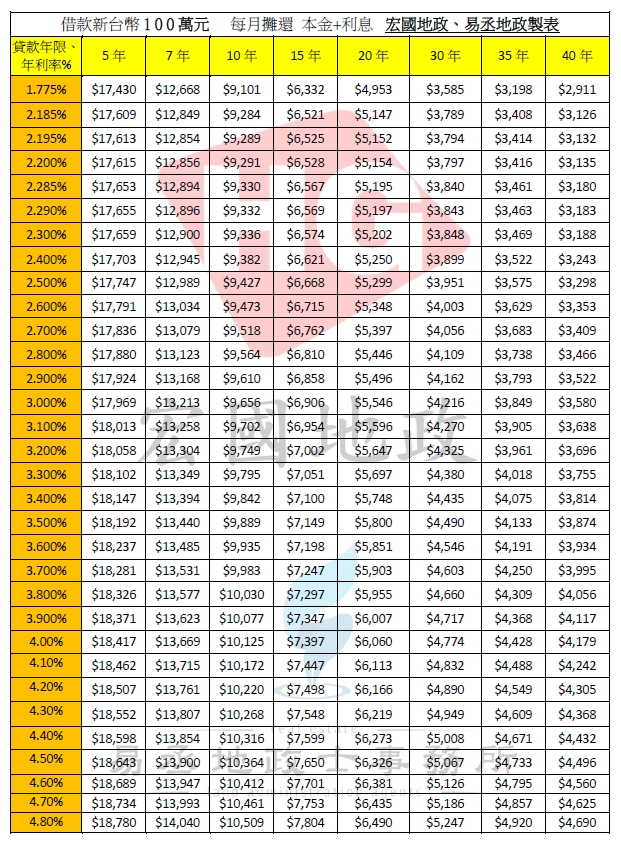
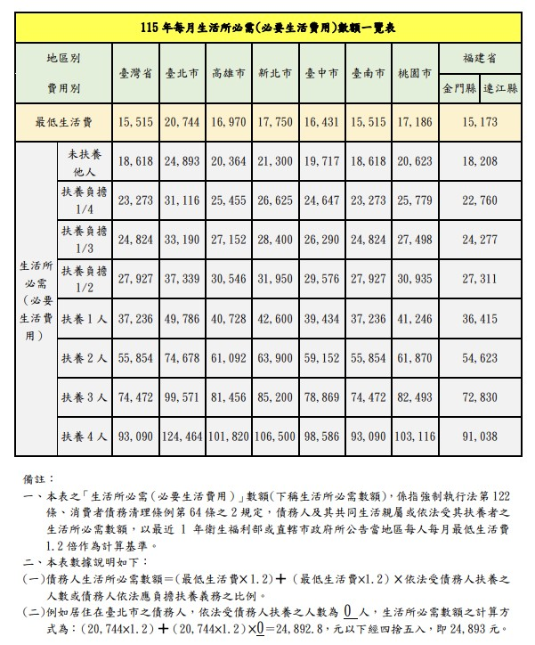

宏國地政 | 易丞地政
Professional Real Estate Evaluation
客戶背景資料
看401/403表或淨利。無報表需備長期存摺。
以年度扣繳憑單為主。
需提供近 6個月 薪轉證明。
建議收到款項後「全額存入」存摺再提領，建立金流。
央行管制提醒：{{ houseCount === 1 ? '第2戶上限5成，無寬限期。' : '第3戶以上上限3成。' }}
財務與負債狀況
$
$
請務必「加總」以下月付金：
- 信貸、車貸、學貸
- 企業/創業貸款、名下原有房貸
若計畫在本次房貸前「完全清償」某筆貸款，該筆金額可填 0。
最高額度試算分析
✅ 宏國建議 (55%)
{{ safeLoan }}萬
穩健繳款
🔥 市場極限 (70%)
{{ limitLoan }}萬
需信用極佳
🏛️ 公股銀行 (嚴格)
{{ publicLoan }}萬
依地區生活費
*基準：每百萬月付約 $4,000 (30年/2.5%)
📊 查看「房貸利率月付金對照表」

公股銀行審核標準 (收支比 < 180%)
扶養扣除中
扶養親屬生活費扣除：
基準：${{ basicLivingCost.toLocaleString() }} ({{ region }})
人數：{{ dependents + 1 }} 人 (含本人)
-${{ (basicLivingCost * (dependents + 1)).toLocaleString() }}
計算公式：月收 ÷ 1.8 - 負債 - 生活費
💰 「115年每月生活所必需數額一覽表」
4. 保人需求試算
當您想貸的金額超過自身收支比時，需徵提保人。
$
需要保人 / 資料不足
您的收支比偏高，建議徵提保人以提高過件率。
🟢 50% 輕鬆過件
{{ guarantorIncomeSafe }}萬
保人建議月收
🟠 60% 極限操作
{{ guarantorIncomeLimit }}萬
保人最低門檻
📝 點此查看：收支比計算公式
公式 (總負債 ÷ 收支比) - 借款人收入 = 保人所需月收
✅ 範例：貸1000萬(月付4萬)，本身信貸2萬。總支出6萬。
若以 60% 計算：6萬 ÷ 0.6 = 需10萬總收。若您月收6萬，則保人需補 4萬。
恭喜！您的財務狀況健康
收支比低於 55%，原則上不需保人。
購屋貸款常見 QA
💰 1. 現金收入/攤販 怎麼認定？
銀行看重「穩定性」。建議固定時間將收入存入存摺。無報稅者需提供長期存摺或營業場所照片佐證。
📉 2. 有信貸、車貸會影響嗎？
會吃掉收支比。若負債比過高，建議房貸送件前「提前一個月」清償完畢並取得證明。
🏠 3. 夫妻買房，先生當保人？
若僅為「一般保證人」不算名下負債；若為「借款人」之一，未來他自己買房會受第二戶管制。
試算僅供參考，最終結果以銀行批覆為準。
© 2026 宏國地政 | 易丞地政. All Rights Reserved.